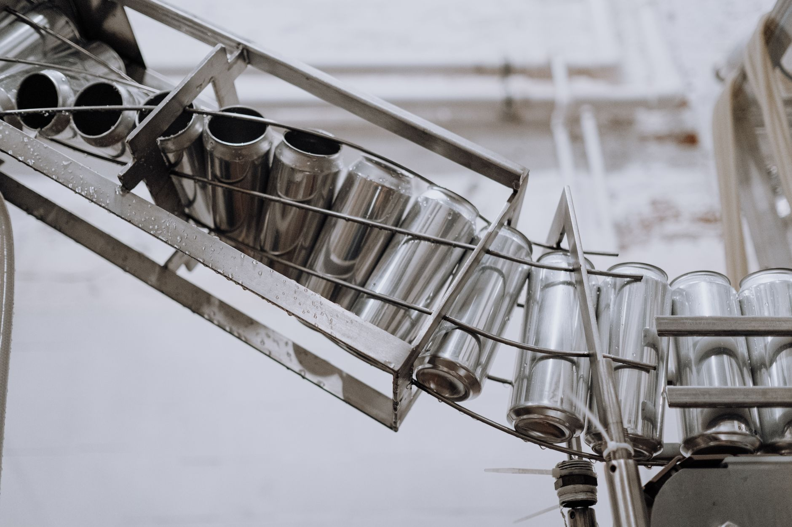

고려아연 갈륨 年15.5t 독자 생산, 중국 의존 87% 끊어낼 수 있나

고려아연은 2025년 내 갈륨 생산 공장 착공을 확정하고, 2028년부터 연간 15.5톤 규모로 상업 생산에 돌입한다고 공식 발표했다. 투자 규모는 수백억 원대로, 기존 아연 제련 부산물 흐름을 활용해 갈륨을 회수하는 방식이다.
갈륨은 GaN(질화갈륨) 전력 반도체, LED, 5G 기지국용 화합물 반도체의 핵심 소재다. 중국은 2023년 8월 갈륨 수출 허가제를 전격 시행한 이후 사실상 대(對)서방 공급을 조이고 있으며, 글로벌 갈륨 생산의 약 80~85%를 중국이 장악하고 있다.
한국은 연간 약 30~35톤의 갈륨을 수입하며, 이 중 87% 이상이 중국산으로 집계된다(한국광해광업공단 2023년 통계). 고려아연의 15.5톤 생산이 현실화되면 국내 수요의 약 45%를 중국 외 루트로 대체할 수 있는 계산이 나온다.
고려아연은 이미 게르마늄 생산에서 선행 경험을 보유하고 있다. 2022~2023년 게르마늄 파일럿 생산을 통해 제련 부산물 회수 공정을 검증했으며, 갈륨은 아연 전해 공정의 불순물 흐름에서 추출하는 방식으로 원가 구조가 비교적 유리하다.
이번 발표의 핵심은 '국내 유일 공급망'이라는 표현에 있다. 현재 한국에서 갈륨을 상업 규모로 생산할 수 있는 기업은 고려아연이 유일하다. 즉, 삼성전자·SK하이닉스·LG이노텍 등 GaN 반도체 및 LED 소재 수요 기업들은 결국 고려아연이 제시하는 가격과 조건을 받아들일 수밖에 없는 구조가 형성된다.
다만 2028년 상업 생산까지 약 3년의 공백이 존재한다. 이 기간 동안 중국이 추가 수출 통제를 강화하거나, 미국·일본 등 동맹국이 별도의 갈륨 공급 네트워크를 구성할 경우 고려아연의 시장 포지셔닝이 달라질 수 있다. 15.5톤이라는 물량도 글로벌 수요 대비로는 여전히 미미한 수준임을 간과하지 말아야 한다.
공급망 인텔리전스 관점에서 더 중요한 포인트는 '가격 결정권'이다. 중국산 갈륨의 현재 현물가는 킬로그램당 약 220~280달러 수준이지만, 수출 통제 국면에서는 500달러 이상으로 급등한 사례가 있다. 고려아연이 이 가격 범위 내에서 경쟁력 있는 단가를 제시할 수 있는지가 실제 납품 계약의 관건이다.
고려아연은 갈륨 생산 시점이 현실화될 경우 연간 15.5톤에 킬로그램당 300달러를 적용하면 약 46억 5천만 원(약 350만 달러)의 신규 매출을 창출할 수 있다. 가격 변동성을 고려하면 상방 시나리오에서 100억 원 이상도 가능하다.
GaN 전력 반도체를 설계·조립하는 국내 팹리스 및 IDM 기업들, 특히 LS Electric·현대일렉트릭 같은 전력 변환 설비 업체들도 안정적인 국산 갈륨 확보를 통해 중국 리스크를 헤지할 수 있다. 이들은 현재 갈륨 조달을 전량 수입에 의존한다.
일본 스미토모화학, 독일 FreibergerMetalle 등 비중국권 갈륨 공급사들도 단기 반사 수혜를 받는다. 한국 수요처들이 중국산 외 대안을 복수로 확보하려는 움직임이 강해질수록, 기존 비중국 공급사들의 협상력도 동반 상승한다.
중국 최대 갈륨 생산업체인 Chinalco(중국알루미늄공사) 및 Zhuhai Fangyuan 등 중국계 갈륨 제련사들은 한국 시장 점유율 잠식을 장기적으로 감수해야 한다. 다만 2028년까지는 여전히 한국의 주요 공급처 지위를 유지할 가능성이 높다.
단기적으로는 국내 소재 수입상들이 타격을 입는다. 현재 갈륨을 중국에서 매입해 국내 수요처에 공급하는 중간 거래 구조가 고려아연의 직납 체계로 대체될 경우, 유통 마진 구조 자체가 사라질 수 있다. 연간 거래 규모로는 수십억 원대의 유통 매출이 소멸될 수 있다.
국내 GaN 반도체·LED 소재 구매 담당자라면 지금 당장 고려아연과 MOU 또는 장기공급 예약 계약(LOI) 협상을 시작해야 한다. 2028년 상업 생산 개시 물량은 연 15.5톤으로 한정되어 있으며, 선점 기업이 단가·우선순위 모두 유리한 위치를 가져간다.
투자자 관점에서는 고려아연의 전략광물 사업부 매출 비중 변화를 2026~2027년 실적 시즌마다 추적해야 한다. 파일럿 생산 수율과 단가 공시 여부가 실질적인 밸류에이션 변화의 선행 지표가 된다.
실제 조달 현장에서는 — 갈륨처럼 중국 의존도가 85% 이상인 소재는 '가격이 올라야 움직이는' 구조가 아니라 '물량 자체가 끊기는' 리스크가 먼저 온다. 게르마늄 수출 허가제 시행 당시 실제로 2023년 4분기에 일부 한국 수요처가 6~8주 납기 지연을 경험했다. 고려아연 갈륨 공장이 가동되기 전까지 최소 3개월치 전략 재고를 확보해두는 것이 조달 리스크 관리의 기본이다.
이 포스팅은 쿠팡 파트너스 활동의 일환으로 수수료를 제공받습니다.